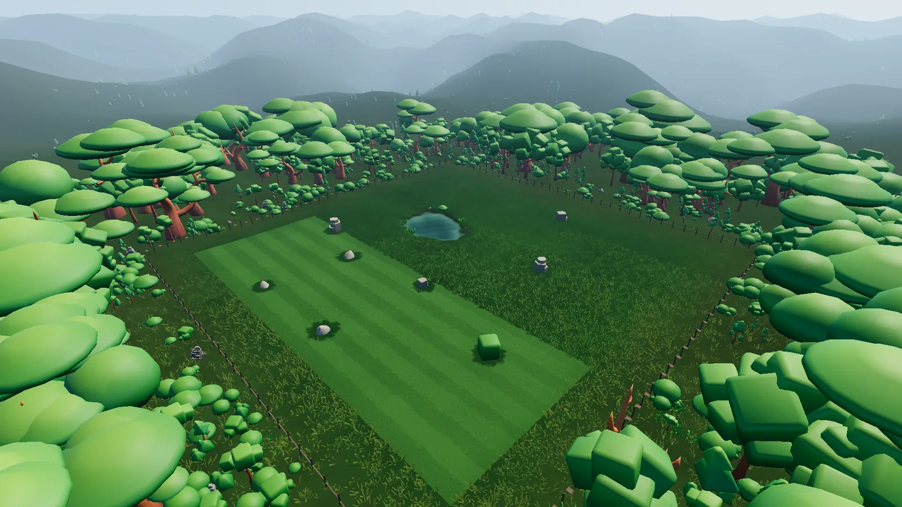

Procedural property system
A contract seed sets up lawn size, terrain, boundaries, obstacles, ponds, planting zones, forest density, and the surrounding area. The same property data also feeds mowing completion and the minimap.

Independent Godot project · Active development
A lawn-care business simulator built around physically mowing generated properties, with the business systems that turn each job into a full workday.
Project overview
The current build takes a player from the main menu to the business town, a generated contract, a physical mowing job, payment, and back again—while carrying meaningful state between sessions.
A Cut Above is an independent project built around gameplay systems, application flow, generated content, simulation state, persistence, UI integration, optimization work, and validation tooling. Credited art, audio, and third-party components remain behind documented boundaries.
Engineering highlights
Property data, rendering, simulation, and presentation work together so a large lawn can be generated, mowed, saved, and checked without losing the thread between systems.
A contract seed sets up lawn size, terrain, boundaries, obstacles, ponds, planting zones, forest density, and the surrounding area. The same property data also feeds mowing completion and the minimap.
Compact byte arrays track one-unit lawn cells. The mower deck sweeps across that data directly, so progress updates without a physics body for every blade of grass.
Cullable near- and mid-field grass tiles use MultiMesh instances. A small mask texture keeps shaders in step with the cut state, while probes and stress scenes track build and runtime costs.
Routing, jobs, time, economy, equipment, business state, and file I/O each have a focused home. UI shows state and sends actions back to those systems.
A persistent WorldClock drives scheduled weather. Project adapters pass that into Sky3D, precipitation, lighting, and the ground-condition presentation.
Save sections cover the world, jobs, economy, equipment, business progress, and active lawn work. Automated suites and visual probes check both the rules and the presentation.
One shared property model
A pond is more than scenery: it shapes terrain, removes lawn cells, affects obstacle placement, appears on the minimap, and stays out of the completion calculation. The same approach supports boundaries, rocks, planting beds, conservation areas, and other property features.
Gameplay and business systems
Three mower types, generated jobs, fuel, equipment, upgrades, economy, territories, agreements, reputation, weather, and business history all feed the same playable workday.
Current build
Selected to show the production loop and the systems behind it—not every available screen.
Technology
Gameplay showcase
The existing v0.3 showcase demonstrates the menu, town, contracts, mowing, upgrades, fuel, and persistence. The current screenshots and repository represent the newer build.
Watch on YouTubeDevelopment status
The connected gameplay and business loop is working. Current development continues across presentation, balance, content breadth, validation, and performance.